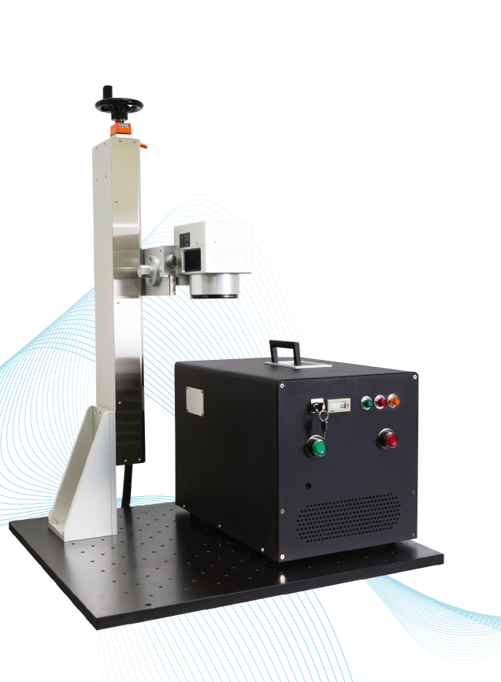

Portable Fiber Laser Systems - Model OFB
Model OFB fiber laser system is a CE certified portable laser system. It passed all tests for IEC 89/336/EEC EMC Directive, 2006/95/EEC Machinery Directive and EN60825-1, 2nd Ed. 2007.
We offer a line of portable fiber laser systems for laser marking, engraving, drilling, cutting and micro-processing applications. We use best quality 10W, 20W, 30W or 50W Q-switched fiber lasers.. All systems use brand name high quality scanhead and laser controller.
Our portable fiber laser system features an integrated "handheld" control module which includes all the laser and scanner control, power supplies, fiber laser, USB connection and external control I/O.
The system also features a special operator control box with lasing "Start", "Stop" and "Emergency Stop" buttons for ease of use at your production site.
Our open frame system enables customer to engrave or mark very large piece of parts without any limitation.
Our Z axis (optional) with indicator can give you precise the focus every time for the same part.
Fiber laser MTBF is > 50,000 hours.
We offfer free online training after installation. We proudly offers lifetime technical support guarrantee.
Special promotions are offered now. Click here for all the details.
Contact us now to order this fiber laser or if you are interested in becoming our reseller in your country.
Portable Fiber laser system: Model OFB-20

OFB-20 Fiber Laser System with Z-axis option
OFB-20 Specification
Standard Configurations:
Mode of operation: Q-switched
Nominal output power: 20W
Pulse rep rate: 20 - 250 KHz
Optical isolator to block reflection: Yes
Red pointing beam: Included
Laser beam quality M2: < 1.4
F-theta lens: 163 mm
Full marking field: 112 x 112 mm
Electrical: 1 phase, 110/240VAC, 50/60Hz
Power consumption: < 300 W
Operating temperature: 0 - 35 C
Humidity (non-condensing): 10 - 95%
Dimension of control module: W: 280mm x H: 330mm x D: 450mm
Weight of control module: < 20 kg
Warm up time: < 1 minute
Cooling: forced air only
Safety level: Class IV
Options:
Laser power: 10W, 30W, 50W
F-theta lens: 100mm, 254mm, 330mm
Class I enclosure: Yes
Manual Z axis with indicator: Yes
XY table: Yes
Rotary (4th axis): Yes
Fiber Laser Engraving System:
• Easy to maintain.
• High Precision.
• Fewer Consumables.
• Engraving for metal goods.
• High stability for Energy output.
• Can be used more than 50,000 hours.
• Import file type : ai / dxf / plt / bmp.